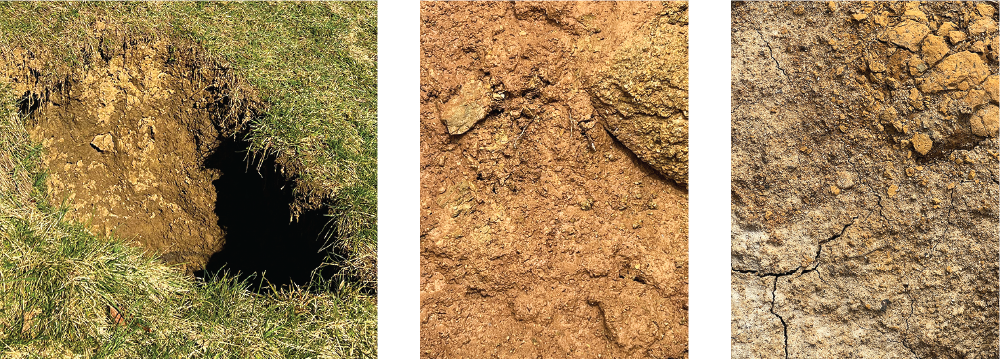
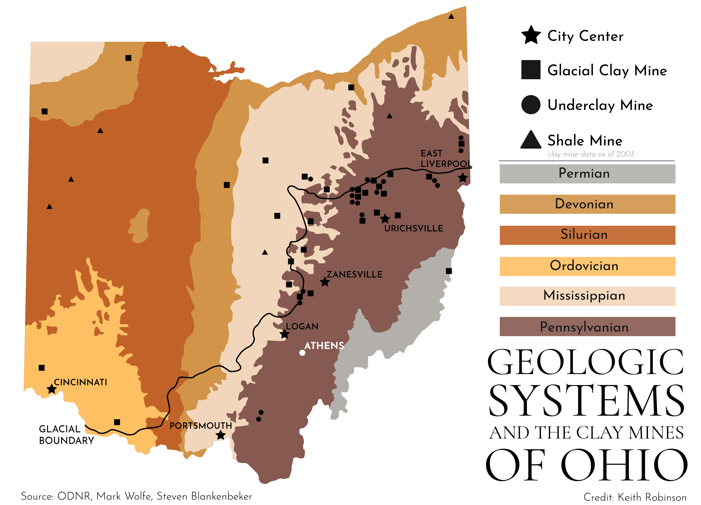

Photos by Isabella Huelsman
A light color clay sample.

Photo By Isabella Huelsman
Dr. Daniel Hembree
Geology
At first glance clay may appear to be just another mud that makes up the earth, but when looked at closely it begins to reveal its true complexity. Clay in the Athens region began forming 300 to 250 million years ago, during the Pennsylvanian and Permian eras. Through hundreds of millions of years of transformation, stones and minerals physically and chemically weather through wear and tectonic plate movement, forming sediment.
In this area, the sediment was rich with clay minerals. Deposits from the Appalachian region flowed through streams and settled in the soil. These ancient soils turned into sedimentary rocks, which are now called paleosols. They were once alive with burrowing animals and insects, roots and plant matter. Dr. Daniel Hembree is a geologist at Ohio University, and specializes in sedimentary rocks and ancient soil ecosystems.

Graphic By Owen Zeiler
The soil around Athens Ohio is a clay soil. It has a high ratio of clay particles and lower amounts of sand and silt particles. It has an ochre color from small amounts of iron oxide. Rain swells up clay soils like a sponge. They hold more water than other soils. After it rains clay soils stay moist longer, which can benefit crops. However, in an extensive dry period clay soil will dry out and crack. Clay soil can also be dense and resistant to digging.
As the paleosols erode, they once again release the clay minerals into the soil.
“These ancient soils are turning into modern soils, which are full of smectite. … It's just continuous recycling.”
Clay that is redder in appearance has a higher level of iron in it, driven by microbial growth, a form of chemical weathering that produces oxidized iron. Clay that has more of a greenish tint has less iron and is made up of more pure clay. These are often called “underclays” because they are found underneath the coal layer.
The excavation of clay in the Appalachian area goes hand in hand with the coal industry. When miners came into the area to extract coal, a thin layer of clay came up as well.
“So it’s on par with coal, right, something that’s a product of a long term process. It had been a long time ago that we’re making use of today.”
Since clay is used as a main material in brickmaking, it has been crucial to the development of southeastern Ohio. However, before clay is formed into shape and cooked in a kiln, it is incredibly porous and malleable.
Due to the small particle structure, it can change rapidly from being dried out and crumbling to a wet and muddy substance. This has led to the ever-changing landscape surrounding Athens. Mountain ranges in this area used to be towering figures on the horizon, but since clay sits at the base of the mountains and has a low level of rigidity, the land slowly erodes down into the landscape today.

Graphic By Keith Robinson
“Clay loves to move. So basements are all broken up and fractured, driveways are all broken up and fractured, because these soils are constantly moving from that shrinking and swelling process.”
The ever changing nature of clay reflects the versatility of the material, and it has provided brickmakers, potters, pipe-makers and craftspeople with a plethora of clays to be used in industry in the area.
Copy Editor: Dylan Benedict
1 / 5

2 / 5

Photos by Isabella Huelsman
A paleosol sedimentary rock has yellow and green areas that are remnants of ancient plant roots that once lived in the soil.
A paleosol sedimentary rock has yellow and green areas that are remnants of ancient plant roots that once lived in the soil.
3 / 5

Photos by Isabella Huelsman
A paleosol sedimentary rock has vibrant colors.
A paleosol sedimentary rock has vibrant colors.
4 / 5

Photos by Isabella Huelsman
A sample of granite, a common metamorphic rock, is rich with pink feldspar minerals, an easily eroded precursor to clay minerals.
A sample of granite, a common metamorphic rock, is rich with pink feldspar minerals, an easily eroded precursor to clay minerals.
5 / 5

Photos by Isabella Huelsman
A sample of mica, a mineral with a structure of thin, weakly-bonded sheets. Mica is similar to clay as they both break apart easily and form in thin layers.
A sample of mica, a mineral with a structure of thin, weakly-bonded sheets. Mica is similar to clay as they both break apart easily and form in thin layers.